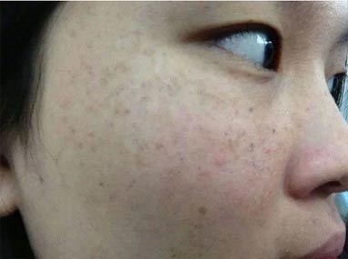

谈谈最流行的祛斑方法，你都使用对了吗？
导语：前段时间，无意间在朋友圈晒了几张祛斑前后的对比图，想不到引来大批姐妹的“热捧”，让我有点受宠若惊~！今天我索
性把祛斑过程都公开，省得我把这个祛斑方法一遍一遍的告诉不同姐妹。文章结尾有联系方式，想祛斑的最好花5分钟时间耐心看完全文。
经常有朋友抱怨关了网页后
找不到我，建议各位先加谭老师微信：2380368144（长按微信号可复制）
空气污染、紫外线、电脑辐射……
你的脸上是否也长出了讨厌的斑点
网上流传的各种祛斑方法、小妙招，你用对了吗？
白醋洗脸可祛斑？
这个方法想必很多人和小编我一样都试过，不知道你们坚持了多久，反正我为了把脸上的斑去掉是坚持天天忍着酸溜溜的刺鼻味道用醋洗脸，开始使用的前一周并无大碍，一个月之后脸却感觉越来越干燥，脸部T区周围却开始脱皮了，我不安的赶紧上网查资料才了解到白醋和白酒一样也有度数，一般超过2度以上的白醋对皮肤的刺激性很大，而我们做菜用的食用白醋度数都在3~4度，若是没有分清楚用了度
数很高的白醋洗脸，甚至有毁容的可能性。看完这个结果我直接把买的白醋给倒掉了，
相信很多姐妹看到这个小技巧，也和小编我一样，试着去洗脸，到底是祛斑了，还是导致你和小编我一样脱皮了。
喝柠檬水可以祛斑？
喝柠檬水倒更是简便流行祛斑的方法，这个简便的方法小编我更是天天坚持喝，要说到祛斑的效果，可以说是微乎其微，小编我每天清早都会泡一杯鲜柠檬水，苦涩的味道想必我不用说大家都能知道，但是为了把脸上的斑去掉我也忍了，我以为时间久了可以让我脸上的斑淡 一点，但是喝了整整一年，我也没见到我脸上的斑减少多少，毕竟喝柠檬水属于内调，内调是一个漫长而持续的过程，而对于很多三分热度的年轻人，让你坚持喝一两年，又有多少能做到，我这只小白鼠即使做到了，仍然也没达到理想效果。 更多祛斑妙招解析，查看微信：2380368144（长按微信号可复制）的朋友圈
红糖面膜可以祛斑？
据朋友说红糖有解毒以及淡化黑色素的功效，小编我就在网上搜索使用方法，将3大匙红糖放在锅里加热，待溶化至黏稠的浆状时熄火，冷却到15摄氏度左右后，涂在洗净的脸 上，15—30分钟后洗掉，每周使用两次，我连续使用了三个月左右，多少还是能到淡化的作用，但是无法根除皮肤层的黑色素，何况这个方法使用起来比较麻烦，还容易落在衣领上和凝结住头发，在涂抹时必须小心谨慎。
醋泡鸡蛋可以祛斑？
这个祛斑方法是小编听朋友使用过，将鸡蛋完全浸泡在白醋中，密封一周后取出，用其蛋清液每日涂抹在有斑点的部位，便可以将斑点祛掉。但是她涂了两天就放弃了，因为蛋清液的 酸臭味让她实在无法承受。虽然这个方法在网上一直流传得很疯，却一直不见有流传出试过后真正将斑祛掉的消息，效果想必大家不得而知了。想要了解更多祛斑小妙招，查看微 信： 2380368144 （长按微信号可复制） 一定能找到你想要的方法
中药可以祛斑？
目前最流行的大概就是这个中药祛斑，很多自称是老中医祖传的祛斑配方，一些中药的确在本草纲目上记录有祛斑的功效，不过是药三分毒，中药通常是通过合理的药材搭配和比例才 能真正出效果。小编我曾经在一个老中医那里得到一套祛斑的祖传方法， 那股中药味现在想起来都想吐，我强忍着坚持喝了半个月但是并没有见到脸上的斑有所减少，我干脆直接放弃了，因为真的受不了那股难闻的中药味。
先看看我祛斑之前和祛斑之后的照片吧，再想想现在的你
我相信肯定有很多朋友跟小编一样，用了太多的祛斑美白小 技巧！ 试来试去浪费金钱是小事，糟蹋自己才是大问题，现在的皮肤都不是斑点的问 题了，乱用产品真是没少让自己吃亏！小编深知脸上有斑是多么的痛苦，去不掉的色斑是多么的让人自卑和无奈。如果你也和曾经的我一样，那么请您花3分钟看完小编我祛斑的故事，下一个改变命运的就是你！
前段时间我在贴吧发了个求祛斑方法的的帖子，被我一个好久不联系的高中同学看到了，她还给我发了她的一张素颜照，我只记得那时候的她也是满脸的斑点，可是这张照片里的她皮肤白净，看不出一点斑点，我赶紧问她是怎么把斑点去掉的，她就给我讲述了她从一脸斑 点到斑点消失的整个过程，从她的成功中我看到了一丝希望，她告诉我她是从一个叫谭小百的祛斑老师那里得到的祛斑秘诀。对 小编来说，对同学的信任远远大于对谭老师的信任，就怀着试一试的心情添加了她的微信，我在她的朋友圈果然看到了大量别人祛斑成功案 例，其中还包括我同学的反馈，我想她的斑点能够去掉，用在我身上效果应该一样。如 果你和我有一样脸上有雀斑、黄褐斑、晒斑等种种皮肤问她可以加谭老师进行咨询 微 信: 2380368144（长按微信号可复制）
我咨询谭老师的时候，说明了我的状况，并且让她根据我的情况推荐了适合我的祛斑套装，谭姐耐心的帮助我使用产品，只要我遇到问题，她总会细心为我解答。可以这么说，我脸蛋的恢复，就是在谭老师的指导下开始了我的神奇的祛斑之旅！
祛斑之前

大家可以看看我祛斑前的素颜照，斑点严重的时候都不敢拍。
祛斑初期阶段
这是差不多三周的时间，斑已经去的差不多了，肤色变亮，肌肤也变得白皙，不过依稀看到还有些斑没有消失。
祛斑后期阶段
这是大约一个半月的时间，斑几乎看不见了，要离很近才能看到一些很浅的痕迹，皮肤也变得有光泽，我知道成功尽在眼前了，嘿嘿！
很多人觉得不可思议，为什么网上流传的方法起不到作用，凭什么谭老师就可以这么厉害？
谭老师——谭小百 毕业于中国协和医科大学研究生，目前从事医学研究7年，在一次自己偶然机会下得到了广西一位老瑶医的祛斑方，经自己试用后效果明显，经而转赠给予需要的人。
后来小百进入广药研究院任研究员，广药研究院是由诺贝尔医学和生理学奖获得者弗里德·穆拉德任总院院长，中国工程院院士、中华医学会会长、中国系统疾病的领军人物钟南山院士担任荣誉院长。
一次在和研究院的领导闲谈的下，小百说出了获得老瑶医赠送的这张祛斑方，并且帮助多人成功祛斑奇谈，引起了研究院上述两位顶尖科学家的兴趣，决定探索瑶医方子奥秘，在上述两位顶尖科学家的基础上广药总院成功邀请了刘昌孝、姚开泰、肖培根、唐希灿、陈可冀、李连达等 6位国内医药界知名院士组成院士顾问团队，并聘请了乌克兰国家科学院分子生物学及遗传学研究所副所长格瓦伦﹒德米特里教授，形成了由国内外同行专家技术指导，决定对瑶医药方结合现代医学制作工艺进行改良，让更多的人受益于瑶医。
在几千个日月工作里，研究院同事根据瑶医的方子和药效不停的进行科学比对和调整，终于研制成功出改良后的药膏，大伙都反映这种膏起来很方便，这样不止能大大节省熬制瑶药的时间和精力，
经过此改良后的配方效果还更好,这种药膏用起来很方便。
我发现很多瑶方都是根据瑶医天、地、人“三元和 谐”，万物消长“盈亏平衡”理论，让瑶药以动态盈亏平衡相配合，从体外引出人体内部某些遭到破坏的形成的“废气”“废毒”得以让周身自行调节得以恢复。有的用了方子当天就能消除斑斑的红肿，有的人一周就能消斑，有的人一个月祛斑痕，只要配合的方法对了，那就一定能 消斑。现在已经全国各地的不少朋友都想多了解这类瑶医方子适不适他们使用。
对瑶药感兴趣的朋友也可以联系我，想询问方子药膏制作和护肤方面的问题，都可以找我，说实话我目前想研究关于瑶医的东西实在太多了，
很多瑶方其实只要经过改良，就能更加贴切解决个人皮肤问题，我跟研究院同事在合作中发现这个奥秘。
所以有过来咨询的朋友都是根据其个人特质问题，配合方子的，至于我为什么那么慷慨？大概是被那个老爷子瑶医的无私给打动吧，真心希望能真正把瑶药应用在普罗大众的护肤养生上，也希望让瑶医瑶方能越走越远，让更多人从中受益。
想要了解更多斑点皮肤保养和祛斑过程的姐妹可以直接联系谭老师微信: 2380368144（长按复制可添加）
小编有话说：
看了小编分析的这几点，大家心里应该都有了一个数。祛斑确实是一件困难的事情，目前中国饮食上的不安全，很多人贪念垃圾食品的“美味”，可能导致食物中的毒素累积在体内，斑点则愈发 严重。饮食不正常对斑点有什么样的影响大家可以看一下我祛斑前的照片，本来小编皮肤很白斑点很淡看不出来，现 在却遍布全脸，肤色白反而成了凸显斑点的“帮凶”！所以说想要祛斑一定要管住自己的嘴！
对于祛斑后饮食和生活方面小编要特别提醒几点：
⒈防晒是最最重要的一件事，紫外线可以说是形成黑色素的“好帮手”，不注意防晒还可能导致长出日晒斑。
⒉饮食清淡也很重要。很多姐妹觉得忌口很难，特别是一些地区有自家比较重的口味，在祛斑后可以偶尔吃一些，但是要注意不能过度。
⒊多补充维生素C。很多果蔬中含有丰富的维C，例如祛斑方法中提到的柠檬与西红柿，祛斑后补充不仅对身体有益，对皮肤更有很好的保养
作用。
⒋市面上宣传的祛斑产品要谨慎。现在市面上宣传越火的产品里面的化学成分很可能越多，添加激素是里面最可怕的成份，一旦停用会导致斑
点反弹更加严重。
⒌祛斑小偏方不得乱试。网上流传出来的东西大多是为了博人眼球，大家自身缺乏分辨真假的能力，所以不要轻易去尝试，误入歧途。
 谭老师的微信号 扫一扫就可以加为好友了 自己查看谭老师朋友圈的祛斑成功案例吧 |
 7256
7256精彩评论
 67
67小编我已经加了谭老师，她朋友圈里面有好多反馈啊，不知道对我有没有用？
昨天
 作者回复
作者回复小编都亲身体验过了，没有用就不会告诉你们了
 41
41她的方法是挺有用的，已经淡了一点了，不知道多久能全部祛掉
昨天
作者回复坚持长期使用，在饮食上也要注意，自然会见到效果。
 33
33里面讲的所谓的流行的方法我都试了。。。真的一点用都没有。。。用白醋洗脸让我的脸直接脱皮了。。。惨不忍睹啊
昨天
作者回复啊。。要是这个样子赶紧找点适合的方法补救一下。
60我的斑真的是用什么都没有起色，我都快疯了，感谢小编分享，是加这个微信对吧！
昨天
作者回复是的是的是的，重要的事情说三遍~
 100
100我男朋友也长斑 这个对他有用吗？
昨天
作者回复有用的，斑点不分性别，所以不会因为性别就会不起效哦。
358好像听说过谭，我表妹好像也是加了她微信，咨询后使用了她提供的方法，脸上的斑 现在真的淡化了好多。
昨天
 33
33小编你的皮肤好白，有什么妙招吗？？？我快黑成炭了，你分享的这些方法能够使我变白吗？
昨天
作者回复可以尝试一下哦，不会让你失望的。
 50
50我室友好傻，还在试这些没用的方法
昨天
作者回复赶紧告诉她让它停止使用吧，以免和小编一样脸部脱皮。
 24
24已经加上把朋友圈翻了一遍了，大家可以去看看，里面确实提供了各种案例和祛斑方法
昨天
作者回复恩，谭姐的微信： 2380368144; 里面提供方法总有一个适合你的！！！